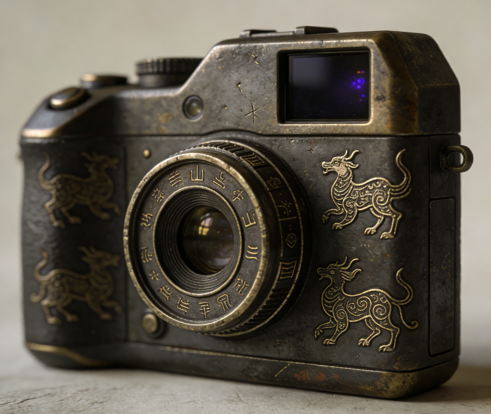

山海奇缘·序章
你是一名对志怪异闻情有独钟的大学生。课余时间，你最常做的事不是刷短视频，而是翻读《山海经》这类古籍。那些关于异兽、异境与荒远世界的记载，你早已熟稔于心，甚至能在合上书页后，凭记忆勾勒出它们的轮廓。对你来说，它们并不只是传说，更像是被遗忘的另一种可能。
某天傍晚，你在宿舍楼下收到了一份没有署名的快递。包裹不大，却出奇地沉，拿在手里，重量与体积并不相称。拆开后，里面静静躺着一台造型古怪的相机。

相机看起来并不崭新，金属外壳带着细微的磨损痕迹，像是被反复使用过。更引人注意的是，机身上刻着几种你在《山海经》中见过的异兽纹样——线条简练，却并非随意装饰，更像某种被刻意留下的标记。你一时间想不起在哪个版本中见过它们，却又无比确定：它们不属于现代设计。
出于好奇，你按下了电源键。
相机启动得很慢，屏幕亮起时并没有出现你熟悉的取景画面，而是跳出了一组问题。它们的措辞简短，却让人摸不着头绪，像是在确认你的身份，又像是在进行某种判定。你无法权衡利弊，只能凭直觉作答：
你会更容易留下：
如果明天所有安排都被取消，你的第一反应是：
当别人误解你时，你更常：
你更相信：